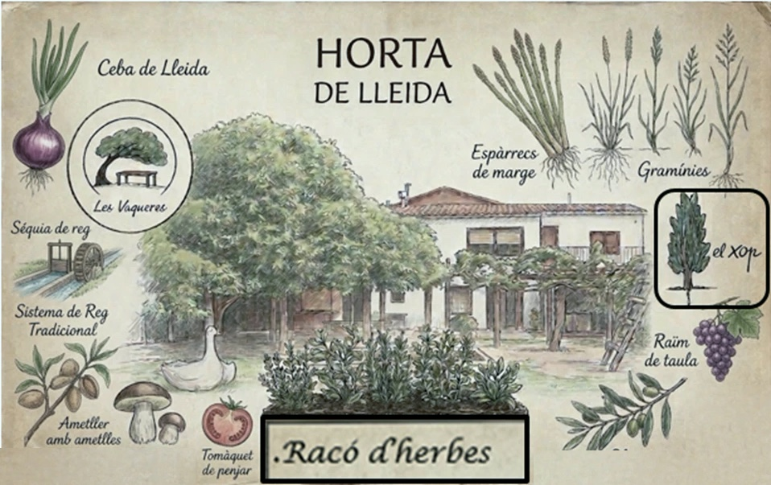

Die Pappel ist vertikal: Sie steigt auf, wacht, verbindet sich mit dem Himmel.

Ein Zeichen des Wassers, des Lebens.


Wir leben in einer Welt, die sich zu schnell dreht. Manchmal brauchen wir nur Zeit und Stille, um das Buch zu beenden, ein großes Projekt vorzubereiten, ungestört zu lernen oder einfach wieder zu uns selbst zu finden.
Der Verein Amics de la Natura öffnet die Türen eines Ortes für Konzentration und Wohlbefinden mitten in der Natur. Fünf gemütliche, eigenständige Apartments (eines davon vollständig barrierefrei) in der ruhigen Landschaft der Horta de Lleida, wo das Abendlicht und der Rhythmus des Landes den Takt vorgeben.
Ob Sie als Künstlerin oder Künstler Inspiration suchen, für Prüfungen lernen, die ersten Seiten einer Geschichte schreiben oder einfach ein paar Tage Ruhe und Abstand brauchen: Hier sind Sie richtig.
Ein Ort zum Ausruhen. Eine Atempause für den Kopf. Ein Ort, an dem die Natur Ihnen Gesellschaft leistet.

Wie an den alten mittelalterlichen Wegen markieren die Zypressen den Willkommensgruß von Les Vaqueres. Drei zusammen bei der Ankunft und eine vierte etwas weiter, ebenso hoch, die das uralte Symbol der Gastfreundschaft verstärkt: das Versprechen eines friedlichen Dachs, eines Tellers am Tisch und einer sicheren Unterkunft auf der Reise.
Weiter oben erhebt sich unsere Weise Pappel: nicht die höchste, aber die größte und älteste Kataloniens, gemessen am Stamm in einem Meter fünfunddreißig Höhe, wie Martí Boada selbst bestätigt hat. Sie ist der Patriarch der Horta, der stille, weise Wächter, der den Frieden dieses Ortes hütet.
Im Schutz des Hauses erwartet uns der hundertjährige Feigenbaum. Schützt die Pappel mit ihrer Größe und ihrem Gedächtnis, so empfängt der Feigenbaum aus der Nähe: Mit seiner langen Bank und der offenen Tür zur Gemeinschaftsküche bietet er den vertrauten Schatten, in dem Gespräche fließen und die Zeit stillsteht.
Die Pappel und der Feigenbaum sind zwei Haltungen zur Welt, die einander ergänzen.
Die Pappel ist vertikal: Sie steigt auf, wacht, verbindet sich mit dem Himmel.
Ein Zeichen des Wassers, des Lebens.
Der Feigenbaum ist horizontal: Er öffnet die Arme, spendet Schatten, lädt zum Sitzen ein.

Ein Symbol der Fruchtbarkeit, der Fülle und der Weisheit.
Es gibt eine Kontinuität.
Sie ergänzen einander. Es ist fast eine Geschichte.